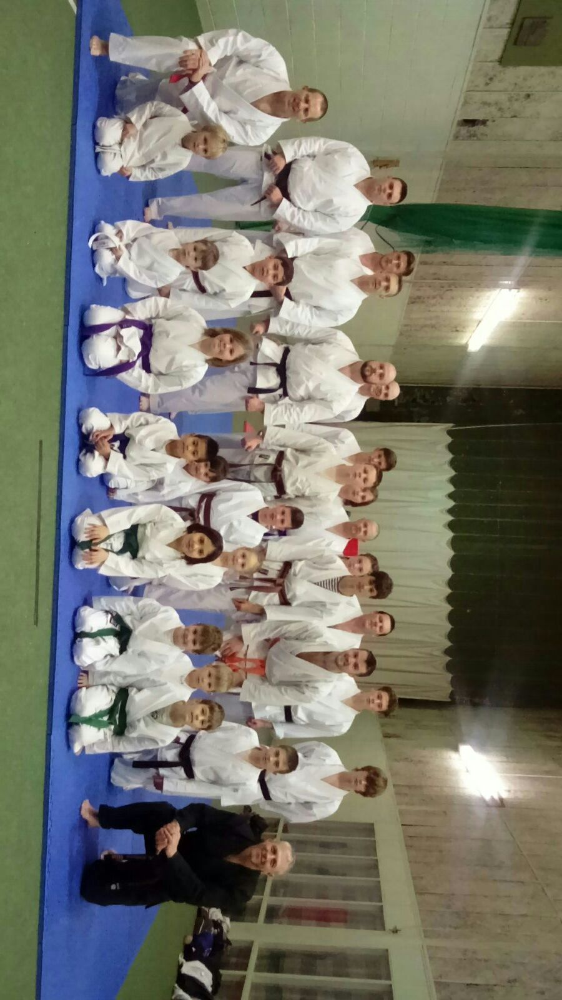
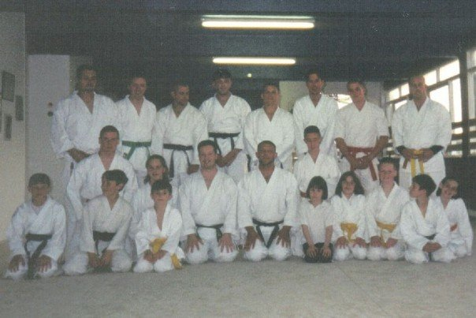
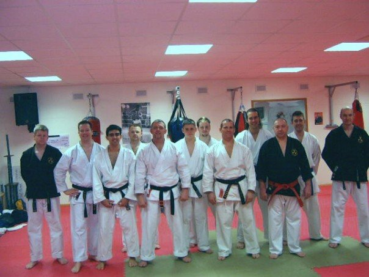
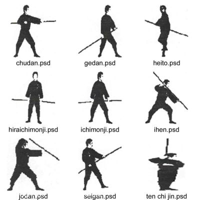
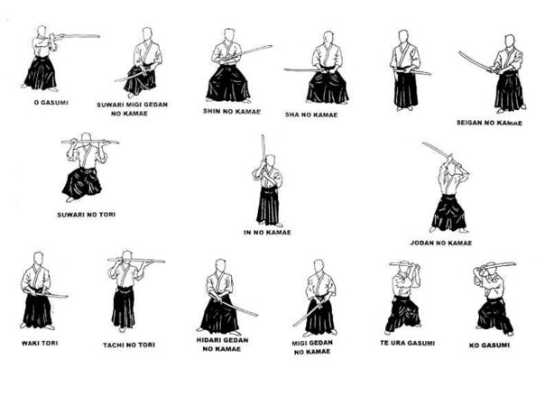

Rules and Etiquette
- No rings, watches or chains to be worn whilst training.
- On entering and leaving the dojo,students must bow.
- Instructors have the right to ask disruptive students to leave the club.
- No eating, drinking or smoking in the dojo.
- All students must be in a suitable training clothes if they do not have a Gi.
- Gi's must be clean and tidy at all times.
- No shoes or socks to be worn whilst training.
- finger and toenails must be kept clean and short.
- Students must only use the techniques that they have been shown in defense not aggression.
- Respect must be given to all students whatever grade.
- Aggression must always be controlled in the dojo.
- We advise all students to take out membership and insurance as soon as possible
VISITORS ARE ALWAYS WELCOME, SUBJECT TO THE ABOVE RULES.
Training Times and Prices
We train on Wednesdays @ uphill scout hut, Juniors 6-7pm adults 7:15-8:30pm Saturdays @ WSM Cricket Club, Juniors 10.30am-11.30am adults 10.30am-12:30pm There is NO monthly membership fees only lesson fees Adults £3.50 Juniors £3.00 Discount for siblings 2 for £5 referral bonus discounts for members First Lesson free for new members!
Photo gallery click on photo to enlarge
Club photo taken on November 25th 2015 When Dan Sweeny, Rob Tayler, took their 3rd Dan

here is the club members from long ago, some faces still remain.

grading of Adam Williams-3rd Dan, and Barry Norton-4th Dan

demonstration of using a bo stick.

demonstration of using a bo stick.
Social Media - club facebook page, click the icon below